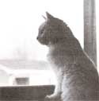
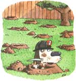

PET HEALTH
It's time we realize that kids aren't born knowing proper pet care.
Most people would agree that caring for animals is as educational for children as it is rewarding. Humans aren't born with the ability to relate well to other animals (this you may remember from watching your toddler try to pull the fur right off your puppy). Too many adults don't seem to realize the limitations of kids and pets when left alone together. To teach proper handling to youngsters, adults must first separate the old wives' tales from the facts.
Take babies, for instance. Many families assume that aged animals are safe when left alone with babies.
Adults don't realize that, potentially, this is one extremely dangerous situation. Without supervision, both can behave unpredictably, especially toddlers and babies, who enjoy grabbing, yanking, and pulling fur.
Dogs-who are often jealous of new infants to begin with-may not hesitate to fight back when handled roughly. Even if a solid relationship between baby and animal develops, the potential for injury always exists. As a veterinarian, I can tell you that I've seen multiple cases of small pets being mutilated by larger children. All could have been avoided with a little parental protection.
Intentional and repeated animal abuse by older children should be taken extremely seriously. One of the worst wives' tales ever propagated is that an animal-abusing child is simply "going through a phase:' Studies have shown that children with a history of animal abuse often progress in this activity and perpetuate abuse to other children, adults, and even property as they grow up. Make sure that you, the consenting adult, keep your eyes open to these scenes and discipline your children if you see abuse occurring.
When you sit down to teach your children responsible pet care, explain carefully the idea of animal dependency. Many youngsters are oblivious to the degree of dependence that a dog, cat, hamster, or horse has on them. Young people can learn best by assisting with feeding and other chores-not by tackling them alone. There are too many stories of the tiny finch that starved in a cage even though it was fed hours ago, or the malnourished turtle who was regularly fed. The children didn't know that the finch eats every hour or that the turtle is not a strict vegetarian and can't survive on lettuce alone. Many adults probably don't know these things either, but it seems appropriate that we adults learn basic pet needs first and then teach them to our children.
Last, bear in mind that dogs, cats, and horses can live 10 to 15 years, and that during this time your kids will grow up and lead increasingly complex lives. You'll be left with aged Fluffy or Spot still needing a home after all your children are in school. And contrary to popular opinion, aged animals are not disposable or simply candidates for euthanasia. So consider your options before buying a pet.
Dear Andrea:
Recently I was driving through upstate New York and noticed two llamas standing in a field. Are these pets or production animals? Would they be suitable for the backyard?
-Earl Breckner Dayton, Ohio
Dear Earl,
The llama, a South American member of the camel family, has shown some popularity as of late due to its wilderness-packing attributes and some backyard farmer's desire for the novel pasture animal. These animals have long graceful necks, with small refined heads, large eyes, and long curved ears. Their hooves are very comparable to our nails, yet cloven with soft pads on the bottom. Adults weigh 250 to 500 pounds at maturity.
Llamas are used in their native environment predominantly as a beast of burden or raised for meat. The wool derived from their coat is not as desirable as many believe. Its mixture of long hairs and fine undercoat is apparently painstaking to separate. However, they are a quiet, inherently thrifty animal that can survive extreme temperatures-with the exception of high heat and humidity.
Because their behavior is strongly influenced by the herd's structure of dominance and subordinance, they may be suitable backyard pets if a breeding pair or small group is kept. However, in a large herd situation, objectionable behavior-spitting, charging, pawing, or striking-may be used to express dominance to other herd members and also to humans. Bottle-feeding young animals and developing extremely close contact with cries (baby llamas) may result in very aggressive, mature behavior that is inappropriate for human interaction.
Feeding patterns are similar to that of a goat or deer, with hays and grasses providing the main source of sustenance. They are basically stock, hardy animals that can withstand many extremes of feed and climate variations. With such intense inbreeding currently going on in North America, they appear to be subject to a variety of congenital limb and gastrointestinal abnormalities. Overall, though, they are a naturally healthy pet.
Llamas seem to have an inherent common sense and territory respect, which makes their initial equipment and housing requirements low. All you need are a roof to deflect moisture and provide shade, and some form of a windbreak. Natural shelter may be sufficient in many climates.
If you think the llama is the pet for you, there's one more thing you should know-the price. City folks and trendseekers longing for rural contact will pay exorbitant prices for these elegant creatures. Females sell for $15,000 to $20,000; males may sell for anywhere between $8,000 and $18,000. Believe it or not, the "in" thing is to purchase a breeding pair. If you're planning on backpacking, a good mule may be a more economical choice.
Dear Andrea:
My cat, Sampson, is an 18-pound, five-year-old, neutered cat who seems prone to bladder stones. He is on a special diet with vitamins and has undergone surgery twice for his problem. What else can we do?
-Barbara Simmons Newport, Rhode Island
Dear Barbara,
Feline urologic syndrome (FUS) is an inflammation of the bladder and urethra that may slow or stop normal passing of urine. It's usually associated with crystal and stone formation and is responsible for 10% of cats' visits to the vet. If untreated, this disease can be fatal to a cat.
FUS occurs as frequently in male cats as female cats. Yet because of anatomical differences, actual urine obstruction or stone blockage occurs more often in the male. The two primary causes are a high concentration of mineral magnesium in the urine and an alkaline (high pH) urine. The increased magnesium can result from cats eating foods high in magnesium, holding their urine, or not urinating enough. It can also result from reduced physical activity caused by indoor confinement and obesity, and drinking too little water. The high pH urine can come from eating big meals or many meals (fat-cat syndrome).
My first suggestion would be to have the stones that were removed from Sampson analyzed. Your vet may be able to send these away to a urolith (urinary stone) laboratory. Often, the crystals seen in the urine are not reflective of the actual crystals at the center of the stone (which started the problem). By determining the exact composition of the stones, you may be able to prevent their formation and not just treat the secondary crystals.
Sampson's weight may be part of the problem. If it isn't a major concern, let him outside for a few hours a day to get some exercise and increase his fat-burning metabolism. Once his activity increases, he will drink more, urinate more, and the crystals will have less of a tendency to form. Try changing his litter box too. Some cats hold their urine because they are too lazy to climb over a too-tall box, or they don't like the brand of litter you use or the location of the litter box.
Check to see whether the vitamin supplement that Sampson takes contains additives that may be contributing to the stone or crystal formation. Finally, have your vet examine Sampson's kidneys via ultrasound or x rays to make sure they are not involved in the problem. Often, long-term antibiotic therapy is necessary to help reduce the inflammation associated with the crystal formation. Your vet may prescribe an appropriate one for Sampson based on a urine or stone culture.
Dear Andrea:
I came across an article in a medical newsletter on arthritis that dealt with the positive effects of glucosamine in reversing arthritis. Is this beneficial for dogs with arthritis? -Miriam Miller Hyndman, Pennsylvania
Dear Miriam,
Glucosamine is one component of a class of body chemicals known as glycosaminoglycans, which are found in joint fluids and anticlotting substances. Several years ago, articles began appearing regarding drugs composed of polysulfated glycosaminoglycans and their possible benefit for arthritis in the horse. However, recent studies have shown that there may be some benefit to giving dogs these drugs in the treatment of degenerative joint diseases. LOW-MAINTENANCE HOUSING:
All your llama needs is a roof to deflect moisture, provide shade, and act as a windbreak.
The most common arthritic condition today in small animals seems to be hip dysplasia. We see this degenerative disease in many of the small, overweight breeds, as well as larger breed dogs. While there are many surgical options for younger animals in the treatment of this disease, older animals may be treated more effectively using medication.It is extremely important to have your vet provide older pets with pain relief for their arthritis. This medication may consist of aspirin or other non steroidal, antiinflammatory medications.
Injections of glycosaminoglycans have recently been studied in the horse and dog to determine if they may have beneficial effects in treating canine hip dysplasia and similar arthritic problems. Unfortunately there are still no scientific studies proving whether there are benefits to the use of these drugs or documenting what longterm effects they may have on the rest of the animal's body.
Currently certain nutrition specialists are experimenting with feed supplements of glycosaminoglycans. Sources of these substances are shellfish, plants, and some forms of animal cartilage. I suspect there are no detrimental effects for short-term use, but would not advise long-term use because of the lack of data available. Hopefully within the next two years we will have gained a better understanding of the absorption, side effects, and benefits.
GETTING OUT OF THE HOUSE
Your dogs may be digging up the lawn out of sheer boredom. Schedule daily play sessions with them.
Dear Andrea:
I own two Labrador retrievers who love to dig. They have transformed my backyard into what looks like a mine field, devastated with knee-deep craters. Any tips on deterring them from digging?
-Don Thompson Spokane, Washington Dear Don,
First of all, understand that digging is destructive behavior for dogs. A dog left alone may be tearing into the lawn as an outlet for boredom. Alternatively, there may have been tangible rewards buried deep within the lawn-an old bone, food scraps, or animal remains-that the dog is attempting to find. If the dog appears anxious and digs only when left alone, it may be a result of separation anxiety. Regardless of the cause, the problem is extremely frustrating for many owners.
Let's address boredom first. Silly as it may sound, most dogs suffer from this affliction in one way or another. A regimen of exercise, obedience training, and scheduled daily "interaction" sessions may help deter the digging behavior. However, exercise or attention sessions should be scheduled and adhered to as a daily routine-rain or shine! If you are inconsistent, the digging will probably get worse as the animal anxiously waits for its "allotted" playtime.
If your dog simply hates being alone and suffers from separation anxiety, you will have to help it get used to being left alone for longer and longer periods of time. Design a time schedule of increasing duration in which the dog will be left by itself.
Punish your dogs for digging only if you can devise a way that won't be associated with you (such as hitting with a newspaper). Some owners opt to place loaded mouse traps on the spots in the yard where the dog digs. Most s cents are unreliable because certain dogs find them attractive and will dig deeper into the dirt to pursue them.
I am more inclined to go with the reward approach, making digging constructive as opposed to destructive. For example, you might condition dogs to dig where you want them to. Make a sandy digging spot in the corner of the yard and hide some treats or bones below the surface. After a while, start hiding the bones sporadically to reinforce digging only intermittently. Meanwhile, if the dog digs a hole in a nonacceptable place, you may resort to mouse traps.
If you notice one area taking disproportionate abuse, try filling the site with rocks or chicken wire. Though unattractive, it may help discourage digging. I believe the best approach to your problem is probably a combination of the above "tricks:' Persevere and allow time (weeks or months) to change your dogs habits.
Editor's Note: Do you have questions regarding your pet's health? Why not send them to Dr. Andrea Looney for some free professional advice? You can write her c/o: Pet Vet, Mother Earth News, PO. Box 729, Arden, NC 28704.
|
The South American Ilama: Best of burden or the trendy new pet of the 90's |
To prevent FUS, make sure your cat is exercising and urinating regularly. |
 |
|
 |
|
|